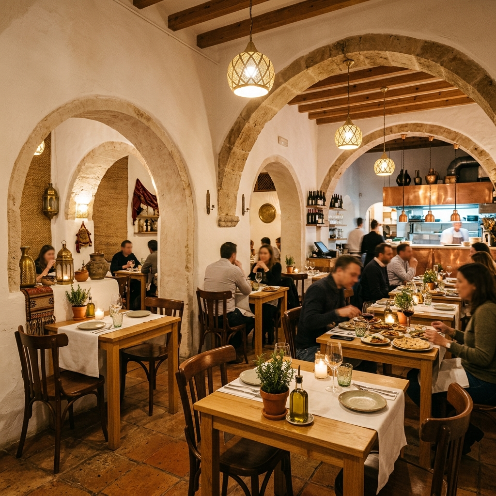
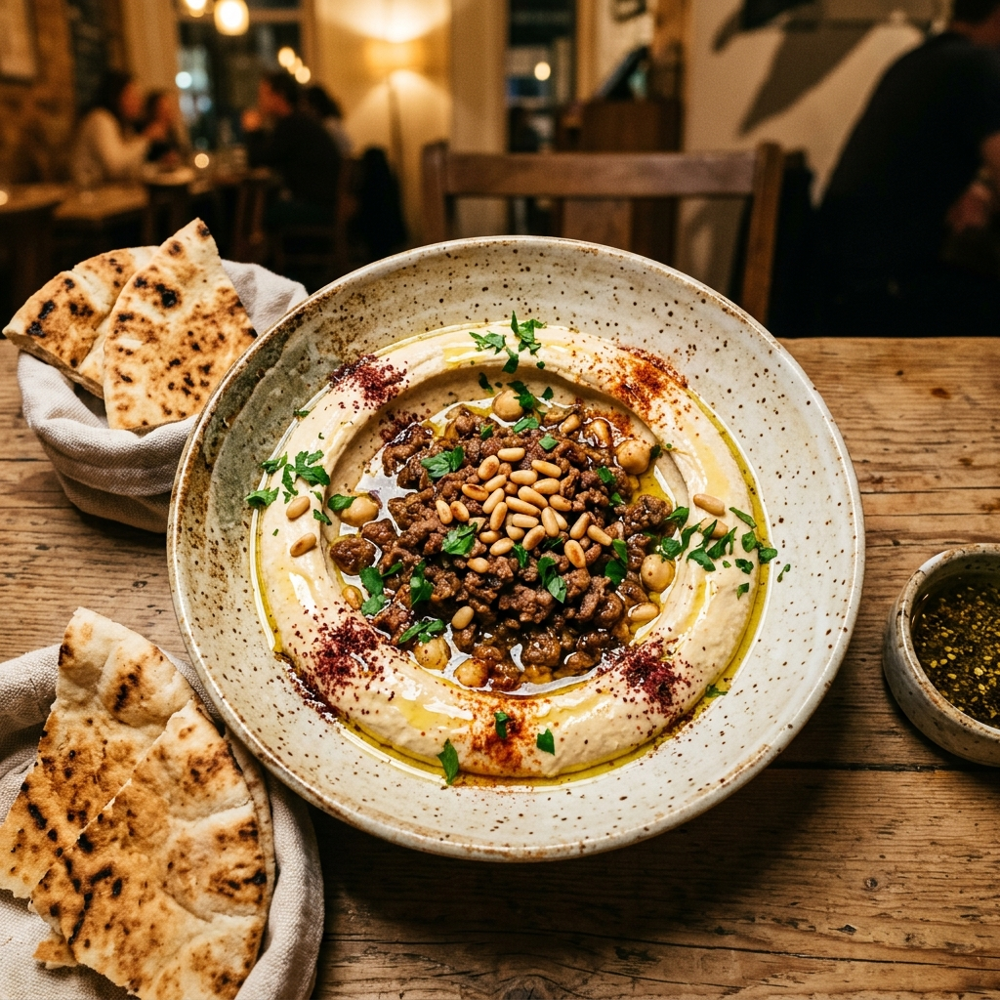
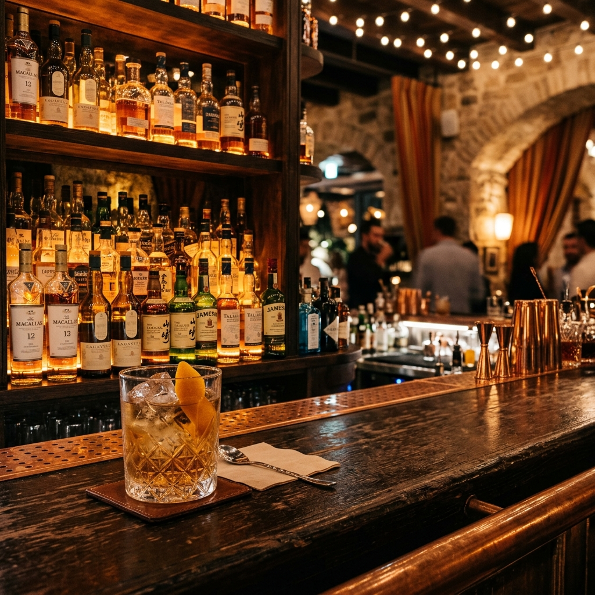
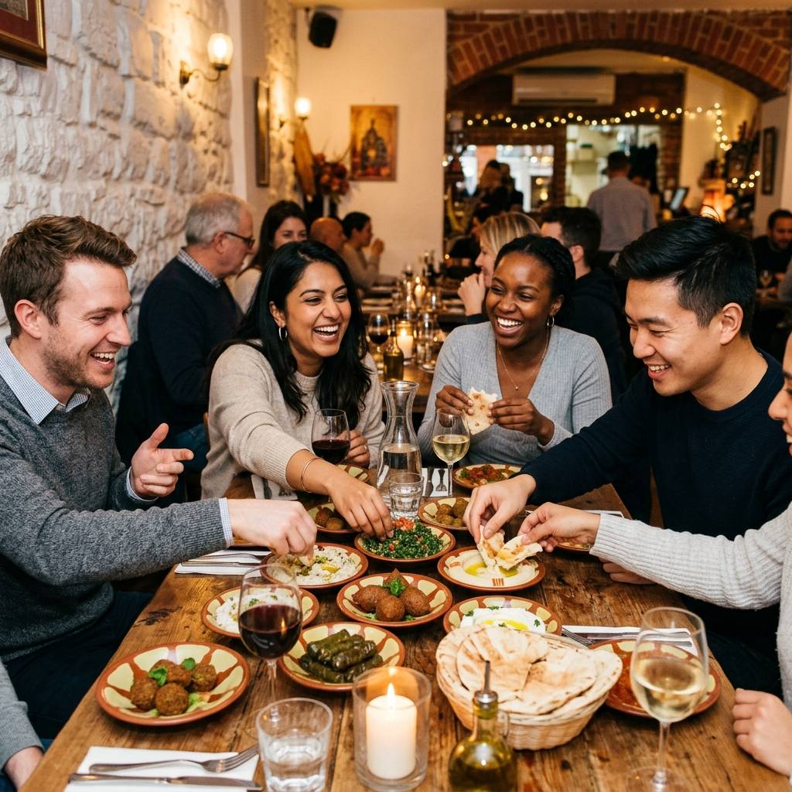

Where Every Meal
Is a Gathering
Authentic Lebanese mezze crafted with love in the heart of Ballard. Share plates, rich flavours, and warm moments — since 2011.

A Taste of Lebanon in
the Heart of Ballard
Born from a deep love of Lebanese heritage, Café Munir opened its doors in 2011 under the vision of chef-owner Rajah Gargour. Nestled quietly in Loyal Heights, we are a neighbourhood favourite — the kind of place where you come for dinner and stay for the stories.
Our kitchen celebrates the communal spirit of mezze — small, beautifully crafted plates designed to be passed around and shared. Every dish is made using the freshest ingredients: bright lemon, fragrant garlic, smoky sumac, and the finest olive oils. Comfort food with a gourmet touch.
"Food is an act of love. Every plate we send out carries a piece of our culture, our family, and our warmth."
— Rajah Gargour, Chef & Owner
Beyond the food, discover our world-class collection of international whiskeys and spirits — a passion project curated personally by Rajah to complement our Mediterranean menu.
A Feast for the Eyes
Step inside Café Munir — from our sun-washed interiors to the richly coloured plates that arrive at your table.



Loved by Our Community
Don't just take our word for it — here's what our neighbours and guests have to say.
"The hummus with sizzling lamb is absolutely incredible — I've been dreaming about it since I left. The whole experience felt so warm and special. Easily one of the best restaurants in Seattle."
"Authentic, delicious, and so welcoming. The muhammara and labne with pickled beets were revelatory. The service was warm and the whiskey selection blew us away. This is our new date-night spot."
"I've been coming here for years and it never disappoints. The food is consistently delicious — every mezze plate is crafted with real care. Café Munir is a true Ballard gem."
"Tucked away in a quiet neighbourhood, this restaurant punches way above its weight. The roasted cauliflower was a highlight, and the staff made us feel like regulars from the moment we walked in."
"Comfort food elevated to an art form. We shared everything and every plate was perfect. The grilled chicken skewers with garlic toum were outstanding. We'll be back very soon."
"Great atmosphere, incredibly fragrant food, and a whiskey collection that rivals any bar in the city. Café Munir is the kind of place that reminds you why you love eating out."
Come Visit Us
We're tucked away on a quiet Ballard street — look for our sign in the window. Walk-ins are welcome, but reservations are recommended, especially on weekends.
Seattle, WA 98117
Loyal Heights · Ballard
Please verify on Google Maps
Reserve a Table
Reservation Request Sent!
Thank you — we'll confirm your table within 24 hours. We look forward to welcoming you to Café Munir.